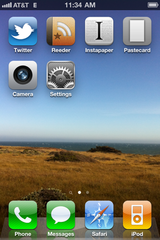

You can tell a lot about a person by what they choose to have on their homescreen, and a lot of people seem to enjoy these introspections. Here’s a play-by-play of the homescreen on my iPhone 4 (GSM, black, 32GB). The top four apps are easily the ones I use the most.
Twitter — Purchased as Tweetie 2, stayed with it since. iOS 4 with multitasking killed its List support, though. My theory is that since apps no longer fully quit, the table of tweets from a List remains in cache. Pulling to refresh on a List inserts the 20 most recent tweets on top of the last tweets you viewed (even if days ago), but doesn’t render the “accordion” between them, removing the opportunity to fill in any tweets that were posted inbetween. Otherwise, great.
Reeder — Nice design, with quirks that aren’t obnoxious. I set the preference to cache all starred items, which are fun to review every once in a while (and this way, I don’t have to wait for the media to load). The list of sharing options is impressive, and equally impressive that it’s so granularly controlled. I have Instapaper, Instapaper Mobilizer, Copy Link, and Send to Safari enabled.
Instapaper — Easily the app where I spend the most time. The whole service is incredible; I paid $10 for the Pro app when it was first released and am happy to have done so. My only feature request is to be able to edit the titles of saved articles directly in the app rather than through the web interface. I obsessively strip site names and other unnecessary words from article tites.
Pastecard — I’ve written more about why I use Pastecard elsewhere. I probably launch this app around 20 times a day.
Camera — The iPhone 4’s camera is great and slowly replacing my point-and-shoot. I tend to dump all the photos to my computer every time I sync, only keeping the ones I want to post on Twitter (and then deleting them after).
Settings — I keep as many antennas off as possible to conserve battery, and it’s useful to have this up front when I need to toggle one back on. Out of the apps I use, only Reeder puts its settings in the Settings app.
Phone — The iPhone is a phone, but I don’t like making or receiving calls. I will say that I don’t remember what voicemail was like before iPhones, so that at least is nice.
Messages — I use text messages way more than I thought I would.
Safari — Other than editing Instapaper entries, mostly used for Google and Wikipedia searches. I know it’s possible to also do this by swiping left into Spotlight, but that ends up launching Safari anyways, so I don’t bother.
iPod — The reason I bought a 32GB iPhone was to fully replace any need for an iPod. My entire music library is on here with plenty of free space remaining.
The background is a photo I took from a house in Sea Ranch, CA.
It’s equally informative what isn’t on my homescreen. I have the Mail app set up to my personal Gmail account, but I barely use it. I feel the same way about email as I do about phone calls. For text-based communication, I prefer text messages and Twitter. Most of the built-in apps, from the two stores to widgets like Stocks and Weather, are grouped together in a folder called “Trash.”
Finally, the phone is set to Edge instead of 3G. This lets me use the phone pretty heavily for two full days before recharging, and the speed is plenty fast. Of course, the four apps I use most primarily retrieve text off the Internet, rather than images or video.